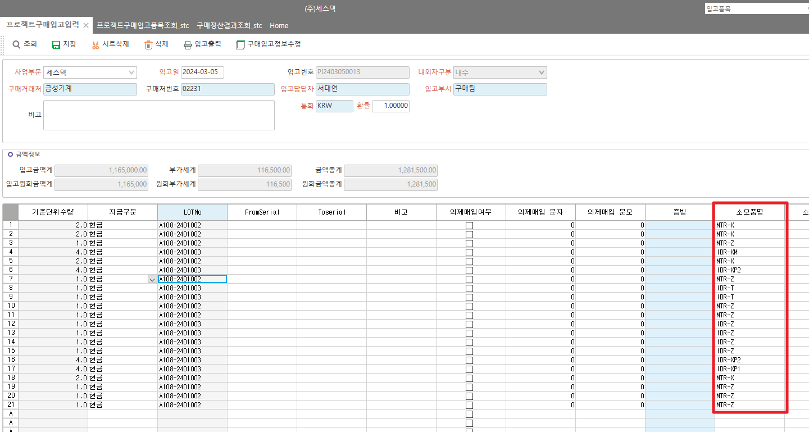

세스텍 - 구매정산결과조회 (품명 이상하게 나오는 현상)
구매입고품목조회 화면에서 Memo5에 '소모품명' 저장 중
해당 값 있으면 소모품명, 없으면 품명 나오도록 되어있음
SP : stc_SPUBuyingResultListQuery
CASE ISNULL(I.Memo5, '') WHEN '' THEN D.ItemName ELSE ISNULL(I.Memo5, '') END AS ItemName , -- 품명

CREATE PROCEDURE stc_SPUBuyingResultListQuery
@ServiceSeq INT = 0,
@WorkingTag NVARCHAR(10)= '',
@CompanySeq INT = 1,
@LanguageSeq INT = 1,
@UserSeq INT = 0,
@PgmSeq INT = 0,
@IsTransaction CHAR(1)
AS
DECLARE @BizUnit INT , -- 사업부문
@DelvDateFr NCHAR(8) , -- 입고일
@DelvDateTo NCHAR(8) , -- ~
@PJTName NVARCHAR(100) , -- 프로젝트
@PJTNo NVARCHAR(100) , -- 프로젝트번호
@DeptSeq INT , -- 부서
@EmpSeq INT , -- 담당자
@CustSeq INT , -- 거래처
@IsSlipSeq INT , -- 전표처리여부
@UMRegType INT , -- 재료자원등록구분
@UMSupplyType INT , -- 재료자원조달구분
@PayDateFr NCHAR(8) , -- 지급예정일Fr
@PayDateTo NCHAR(8) -- 지급예정일To
SELECT @BizUnit = ISNULL(BizUnit , 0),
@DelvDateFr = ISNULL(DelvDateFr ,''),
@DelvDateTo = ISNULL(DelvDateTo ,''),
@PJTName = ISNULL(PJTName ,''),
@PJTNo = ISNULL(PJTNo ,''),
@DeptSeq = ISNULL(DeptSeq , 0),
@EmpSeq = ISNULL(EmpSeq , 0),
@CustSeq = ISNULL(CustSeq , 0),
@IsSlipSeq = ISNULL(IsSlipSeq , 0),
@UMRegType = ISNULL(UMRegType , 0),
@UMSupplyType = ISNULL(UMSupplyType , 0),
@PayDateFr = ISNULL(PayDateFr ,''),
@PayDateTo = ISNULL(PayDateTo ,'')
FROM #BIZ_IN_DataBlock1
IF @DelvDateTo = ''
BEGIN
SELECT @DelvDateTo = '99991231'
END
IF @PayDateTo = ''
BEGIN
SELECT @PayDateTo = '99991231'
END
SELECT DISTINCT
A.SourceSeq,
A.SourceSerl,
A.SourceType
INTO #Result
FROM _TPUBuyingAcc AS A WITH(NOLOCK)
JOIN _TPUDelvInItem AS B WITH(NOLOCK) ON A.CompanySeq = B.CompanySeq
AND A.SourceSeq = B.DelvInSeq
AND A.SourceSerl = B.DelvInSerl
JOIN _TPUDelvIn AS C WITH(NOLOCK) ON B.DelvInSeq = C.DelvInSeq
AND B.CompanySeq = C.CompanySeq
LEFT OUTER JOIN _TPJTProject AS D WITH(NOLOCK) ON A.CompanySeq = D.CompanySeq
AND A.PJTSeq = D.PJTSeq
WHERE A.CompanySeq = @CompanySeq
AND (@BizUnit = 0 OR A.BizUnit = @BizUnit) -- 사업부문
AND (C.DelvInDate BETWEEN @DelvDateFr AND @DelvDateTo) -- 입고일
AND (@PJTName = '' OR D.PJTName LIKE @PJTName + '%') -- 프로젝트
AND (@PJTNo = '' OR D.PJTNo LIKE @PJTNo + '%') -- 프로젝트번호
--AND (@DeptSeq = 0 OR A.DeptSeq = @DeptSeq) -- 부서
--AND (@EmpSeq = 0 OR A.EmpSeq = @EmpSeq) -- 담당자
AND (@CustSeq = 0 OR A.CustSeq = @CustSeq) -- 거래처
AND (@IsSlipSeq = 0
OR (@IsSlipSeq = '1039001' AND A.SlipSeq > 0 )
OR (@IsSlipSeq = '1039002' AND ISNULL(A.SlipSeq,0) = 0)) -- 전표처리여부
ORDER BY A.SourceSeq, A.SourceSerl
CREATE TABLE #TMP_SOURCETABLE
(
IDOrder INT,
TABLENAME NVARCHAR(100)
)
CREATE TABLE #TMP_SOURCEITEM
(
IDX_NO INT IDENTITY,
SourceSeq INT,
SourceSerl INT,
)
CREATE TABLE #TCOMSourceTracking
(
IDX_NO INT,
IDOrder INT,
Seq INT,
Serl INT,
SubSerl INT,
Qty DECIMAL(19, 5),
STDQty DECIMAL(19, 5),
Amt DECIMAL(19, 5),
VAT DECIMAL(19, 5)
)
INSERT #TMP_SOURCEITEM (SourceSeq, SourceSerl )
SELECT A.SourceSeq, A.SourceSerl
FROM #Result AS A
INSERT #TMP_SOURCETABLE
SELECT 1, '_TPUORDPOReqItem' -- 구매요청
EXEC _SCOMSourceTracking @CompanySeq, '_TPUDelvInItem', '#TMP_SOURCEITEM','SourceSeq', 'SourceSerl',''
SELECT C.PJTNo AS PJTNo , -- 프로젝트번호
C.PJTName AS PJTName , -- 프로젝트
CASE WHEN ISNULL(B.PJTSeq,0) = 0 THEN '공용자재' ELSE '' END AS PublicItem , -- 공용자재건(PJT번호없는건)
CASE ISNULL(I.Memo5, '') WHEN '' THEN D.ItemName ELSE ISNULL(I.Memo5, '') END AS ItemName , -- 품명
D.ItemNo AS ItemNo , -- 품번
CASE ISNULL(I.Memo6, '') WHEN '' THEN D.Spec ELSE ISNULL(I.Memo6, '') END AS Spec , -- 규격
B.StdUnitQty AS Qty , -- 기준단위수량
E.UnitName AS StdUnitName , -- 기준단위
F.CustName AS CustName , -- 거래처
LEFT(G.AccDate,6) AS LastYM , -- 마감월
H.DelvInDate AS DelvInDate , -- 입고일
I.DomAmt AS DomAmt , -- 입고금액
I.DomVAT AS DomVAT , -- 부가세
I.DomAmt + I.DomVAT AS TotDomAmt , -- 합계
N.EmpName AS EmpName , -- 구매요청자
O.DeptName AS DeptName , -- 구매요청자 부서
P.Memo1 AS Memo1 , -- 구매사양서 대상여부
J.AssetName AS AssetName , -- 품목자산분류
B.TaxDate AS TaxDate , -- 세금계산서 발행일
B.PayDate AS PayDate , -- 지급예정일
ISNULL(Q.UMRegType , 0) AS UMRegType ,
ISNULL(R.MinorName ,'') AS UMRegTypeName ,
ISNULL(Q.UMSupplyType, 0) AS UMSupplyType ,
ISNULL(S.MinorName ,'') AS UMSupplyTypeName,
F.BizNo AS BizNo -- 사업자등록번호 추가
FROM #Result AS A
JOIN _TPUBuyingAcc AS B WITH(NOLOCK) ON A.SourceSeq = B.SourceSeq
AND A.SourceSerl = B.SourceSerl
AND A.SourceType = B.SourceType
LEFT OUTER JOIN _TPJTProject AS C WITH(NOLOCK) ON B.CompanySeq = C.CompanySeq
AND B.PJTSeq = C.PJTSeq
LEFT OUTER JOIN _TDAItem AS D WITH(NOLOCK) ON B.CompanySeq = D.CompanySeq
AND B.ItemSeq = D.ItemSeq
LEFT OUTER JOIN _TDAUnit AS E WITH(NOLOCK) ON B.CompanySeq = E.CompanySeq
AND B.StdUnitSeq = E.UnitSeq
LEFT OUTER JOIN _TDACust AS F WITH(NOLOCK) ON B.CompanySeq = F.CompanySeq
AND B.CustSeq = F.CustSeq
LEFT OUTER JOIN _TACSlipRow AS G WITH(NOLOCK) ON B.CompanySeq = G.CompanySeq
AND B.SlipSeq = G.SlipSeq
LEFT OUTER JOIN _TPUDelvIn AS H WITH(NOLOCK) ON B.CompanySeq = H.CompanySeq
AND B.SourceSeq = H.DelvInSeq
AND B.SourceType = 1
LEFT OUTER JOIN _TPUDelvInItem AS I WITH(NOLOCK) ON B.CompanySeq = I.CompanySeq
AND B.SourceSeq = I.DelvInSeq
AND B.SourceSerl = I.DelvInSerl
AND B.SourceType = 1
LEFT OUTER JOIN _TDAItemAsset AS J WITH(NOLOCK) ON D.CompanySeq = J.CompanySeq
AND D.AssetSeq = J.AssetSeq
LEFT OUTER JOIN #TMP_SOURCEITEM AS K ON A.SourceSeq = K.SourceSeq
AND A.SourceSerl = K.SourceSerl
LEFT OUTER JOIN #TCOMSourceTracking AS L ON K.IDX_NO = L.IDX_NO
AND L.IDOrder = 1
LEFT OUTER JOIN _TPUORDPOReq AS M WITH(NOLOCK) ON M.CompanySeq = @CompanySeq
AND L.Seq = M.POReqSeq
LEFT OUTER JOIN _TDAEmp AS N WITH(NOLOCK) ON M.CompanySeq = N.CompanySeq
AND M.EmpSeq = N.EmpSeq
LEFT OUTER JOIN _TDADept AS O WITH(NOLOCK) ON M.CompanySeq = O.CompanySeq
AND M.DeptSeq = O.DeptSeq
LEFT OUTER JOIN _TPUORDPOReqItem AS P WITH(NOLOCK) ON P.CompanySeq = @CompanySeq
AND L.Seq = P.POReqSeq
AND L.Serl = P.POReqSerl
LEFT OUTER JOIN _TPJTBOM AS Q WITH(NOLOCK) ON P.CompanySeq = Q.CompanySeq
AND P.PJTSeq = Q.PJTSeq
AND P.BOMSerl = Q.BOMSerl
LEFT OUTER JOIN _TDAUMinor AS R WITH(NOLOCK) ON Q.CompanySeq = R.CompanySeq
AND Q.UMRegType = R.MinorSeq
LEFT OUTER JOIN _TDAUMinor AS S WITH(NOLOCK) ON Q.CompanySeq = S.CompanySeq
AND Q.UMSupplyType = S.MinorSeq
WHERE B.CompanySeq = @CompanySeq
AND (@DeptSeq = 0 OR M.DeptSeq = @DeptSeq) -- 부서
AND (@EmpSeq = 0 OR M.EmpSeq = @EmpSeq) -- 담당자
AND (@UMRegType = 0 OR Q.UMRegType = @UMRegType )
AND (@UMSupplyType = 0 OR Q.UMSupplyType = @UMSupplyType)
AND (B.PayDate BETWEEN @PayDateFr AND @PayDateTo)
ORDER BY PJTNo, ItemNo
RETURN